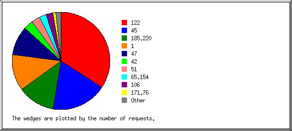
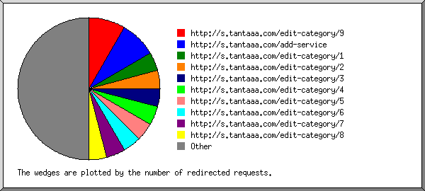
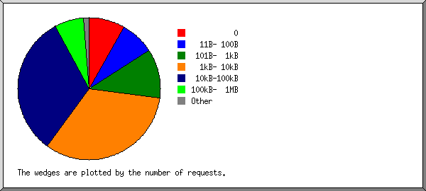
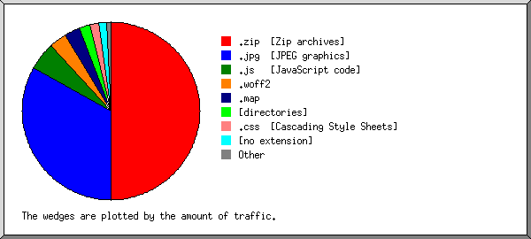

Web Server Statistics for s.tantaaa.com
Web Server Statistics for s.tantaaa.com
Program started on Fri, Nov 20 2020 at 6:13 PM.
Analyzed requests from Sun, Nov 08 2020 at 11:49 AM to Fri, Nov 20 2020 at 8:00 AM (11.84 days).
Web Server Statistics for s.tantaaa.comProgram started on Fri, Nov 20 2020 at 6:13 PM.
Analyzed requests from Sun, Nov 08 2020 at 11:49 AM to Fri, Nov 20 2020 at 8:00 AM (11.84 days).
(Go To: Top | General Summary | Monthly Report | Daily Summary | Hourly Summary | Domain Report | Organization Report | Redirected Referrer Report | Failed Referrer Report | Referring Site Report | Browser Report | Browser Summary | Operating System Report | Status Code Report | File Size Report | File Type Report | Directory Report | Request Report)
Figures in parentheses refer to the 7-day period ending Nov 20 2020 at 6:13 PM.
Successful requests: 1,208 (1,187)
Average successful requests per day: 101 (169)
Successful requests for pages: 72 (69)
Average successful requests for pages per day: 5 (9)
Failed requests: 890 (1)
Redirected requests: 27 (0)
Distinct files requested: 221 (257)
Distinct hosts served: 12 (13)
Data transferred: 87.43 megabytes (22.87 megabytes)
Average data transferred per day: 7.38 megabytes (3.27 megabytes)
(Go To: Top | General Summary | Monthly Report | Daily Summary | Hourly Summary | Domain Report | Organization Report | Redirected Referrer Report | Failed Referrer Report | Referring Site Report | Browser Report | Browser Summary | Operating System Report | Status Code Report | File Size Report | File Type Report | Directory Report | Request Report)
Each unit ( ) represents 2 requests for pages or part thereof.
) represents 2 requests for pages or part thereof.
| month | #reqs | #pages | |
|---|---|---|---|
| Nov 2020 | 1208 | 72 |   |
Busiest month: Nov 2020 (72 requests for pages).
(Go To: Top | General Summary | Monthly Report | Daily Summary | Hourly Summary | Domain Report | Organization Report | Redirected Referrer Report | Failed Referrer Report | Referring Site Report | Browser Report | Browser Summary | Operating System Report | Status Code Report | File Size Report | File Type Report | Directory Report | Request Report)
Each unit () represents 2 requests for pages or part thereof.
| day | #reqs | #pages | |
|---|---|---|---|
| Sun | 21 | 3 |  |
| Mon | 0 | 0 | |
| Tue | 1184 | 67 | |
| Wed | 0 | 0 | |
| Thu | 0 | 0 | |
| Fri | 3 | 2 | |
| Sat | 0 | 0 |
(Go To: Top | General Summary | Monthly Report | Daily Summary | Hourly Summary | Domain Report | Organization Report | Redirected Referrer Report | Failed Referrer Report | Referring Site Report | Browser Report | Browser Summary | Operating System Report | Status Code Report | File Size Report | File Type Report | Directory Report | Request Report)
Each unit () represents 1 request for a page.
| hour | #reqs | #pages | |
|---|---|---|---|
| 0 | 0 | 0 | |
| 1 | 0 | 0 | |
| 2 | 0 | 0 | |
| 3 | 0 | 0 | |
| 4 | 1 | 1 | |
| 5 | 0 | 0 | |
| 6 | 0 | 0 | |
| 7 | 0 | 0 | |
| 8 | 2 | 1 | |
| 9 | 0 | 0 | |
| 10 | 0 | 0 | |
| 11 | 296 | 22 |  |
| 12 | 166 | 16 | |
| 13 | 562 | 23 | |
| 14 | 0 | 0 | |
| 15 | 124 | 6 | |
| 16 | 0 | 0 | |
| 17 | 0 | 0 | |
| 18 | 55 | 2 | |
| 19 | 2 | 1 | |
| 20 | 0 | 0 | |
| 21 | 0 | 0 | |
| 22 | 0 | 0 | |
| 23 | 0 | 0 |
(Go To: Top | General Summary | Monthly Report | Daily Summary | Hourly Summary | Domain Report | Organization Report | Redirected Referrer Report | Failed Referrer Report | Referring Site Report | Browser Report | Browser Summary | Operating System Report | Status Code Report | File Size Report | File Type Report | Directory Report | Request Report)
Listing domains, sorted by the amount of traffic.
| #reqs | %bytes | domain |
|---|---|---|
| 1208 | 100% | [unresolved numerical addresses] |
(Go To: Top | General Summary | Monthly Report | Daily Summary | Hourly Summary | Domain Report | Organization Report | Redirected Referrer Report | Failed Referrer Report | Referring Site Report | Browser Report | Browser Summary | Operating System Report | Status Code Report | File Size Report | File Type Report | Directory Report | Request Report)

Listing organizations, sorted by the number of requests.
| #reqs | %bytes | organization |
|---|---|---|
| 814 | 22.11% | 122 |
| 297 | 2.25% | 185.220 |
| 72 | 1.74% | 51 |
| 7 | 0.01% | 65.155 |
| 7 | 0.01% | 205.169 |
| 5 | 142.54 | |
| 3 | 73.84% | 54 |
| 2 | 0.02% | 64.233 |
| 1 | 0.02% | 18 |
(Go To: Top | General Summary | Monthly Report | Daily Summary | Hourly Summary | Domain Report | Organization Report | Redirected Referrer Report | Failed Referrer Report | Referring Site Report | Browser Report | Browser Summary | Operating System Report | Status Code Report | File Size Report | File Type Report | Directory Report | Request Report)

Listing referring URLs, sorted by the number of redirected requests.
(Go To: Top | General Summary | Monthly Report | Daily Summary | Hourly Summary | Domain Report | Organization Report | Redirected Referrer Report | Failed Referrer Report | Referring Site Report | Browser Report | Browser Summary | Operating System Report | Status Code Report | File Size Report | File Type Report | Directory Report | Request Report)

Listing the top 30 referring URLs by the number of failed requests, sorted by the number of failed requests.
(Go To: Top | General Summary | Monthly Report | Daily Summary | Hourly Summary | Domain Report | Organization Report | Redirected Referrer Report | Failed Referrer Report | Referring Site Report | Browser Report | Browser Summary | Operating System Report | Status Code Report | File Size Report | File Type Report | Directory Report | Request Report)
Listing referring sites, sorted by the number of requests.
| #reqs | site |
|---|---|
| 1034 | http://s.tantaaa.com/ |
(Go To: Top | General Summary | Monthly Report | Daily Summary | Hourly Summary | Domain Report | Organization Report | Redirected Referrer Report | Failed Referrer Report | Referring Site Report | Browser Report | Browser Summary | Operating System Report | Status Code Report | File Size Report | File Type Report | Directory Report | Request Report)

Listing browsers with at least 1 request for a page, sorted by the number of requests for pages.
| #reqs | #pages | browser |
|---|---|---|
| 814 | 50 | Mozilla/5.0 (Windows NT 6.1; Win64; x64) AppleWebKit/537.36 (KHTML, like Gecko) Chrome/86.0.4240.193 Safari/537.36 |
| 297 | 17 | Mozilla/5.0 (Windows NT 10.0; rv:78.0) Gecko/20100101 Firefox/78.0 |
| 14 | 2 | Mozilla/5.0 (Windows NT 10.0; Win64; x64) AppleWebKit/537.36 (KHTML, like Gecko) Chrome/76.0.3809.71 Safari/537.36 |
| 2 | 1 | Mozilla/5.0 (X11; Linux x86_64) AppleWebKit/537.36 (KHTML, like Gecko) Chrome/49.0.2623.75 Safari/537.36 Google Favicon |
| 2 | 1 | Mozilla/5.0 (Macintosh; Intel Mac OS X 10_15_2) AppleWebKit/537.36 (KHTML, like Gecko) Chrome/80.0.3987.149 Safari/537.36 |
| 1 | 1 | Mozilla/5.0 (Windows NT 10.0; Win64; x64) AppleWebKit/537.36 (KHTML, like Gecko; compatible; BW/1.1; bit.ly/2W6Px8S) Chrome/84.0.4147.105 Safari/537.36 |
| 6 | 0 | [not listed: 2 browsers] |
(Go To: Top | General Summary | Monthly Report | Daily Summary | Hourly Summary | Domain Report | Organization Report | Redirected Referrer Report | Failed Referrer Report | Referring Site Report | Browser Report | Browser Summary | Operating System Report | Status Code Report | File Size Report | File Type Report | Directory Report | Request Report)

Listing browsers with at least 1 request for a page, sorted by the number of requests for pages.
| # | #reqs | #pages | browser |
|---|---|---|---|
| 1 | 833 | 55 | Safari |
| 833 | 55 | Safari/537 | |
| 2 | 297 | 17 | Firefox |
| 297 | 17 | Firefox/78 | |
| 6 | 0 | [not listed: 2 browsers] |
(Go To: Top | General Summary | Monthly Report | Daily Summary | Hourly Summary | Domain Report | Organization Report | Redirected Referrer Report | Failed Referrer Report | Referring Site Report | Browser Report | Browser Summary | Operating System Report | Status Code Report | File Size Report | File Type Report | Directory Report | Request Report)

Listing operating systems, sorted by the number of requests for pages.
| # | #reqs | #pages | OS |
|---|---|---|---|
| 1 | 1126 | 70 | Windows |
| 814 | 50 | Unknown Windows | |
| 312 | 20 | Windows NT | |
| 2 | 2 | 1 | Unix |
| 2 | 1 | Linux | |
| 3 | 2 | 1 | Macintosh |
| 4 | 6 | 0 | OS unknown |
(Go To: Top | General Summary | Monthly Report | Daily Summary | Hourly Summary | Domain Report | Organization Report | Redirected Referrer Report | Failed Referrer Report | Referring Site Report | Browser Report | Browser Summary | Operating System Report | Status Code Report | File Size Report | File Type Report | Directory Report | Request Report)

Listing status codes, sorted numerically.
| #reqs | status code |
|---|---|
| 1045 | 200 OK |
| 1 | 301 Document moved permanently |
| 23 | 303 See other document |
| 163 | 304 Not modified since last retrieval |
| 3 | 307 Document moved temporarily |
| 11 | 400 Bad request |
| 1 | 403 Access forbidden |
| 878 | 404 Document not found |
(Go To: Top | General Summary | Monthly Report | Daily Summary | Hourly Summary | Domain Report | Organization Report | Redirected Referrer Report | Failed Referrer Report | Referring Site Report | Browser Report | Browser Summary | Operating System Report | Status Code Report | File Size Report | File Type Report | Directory Report | Request Report)

| size | #reqs | %bytes |
|---|---|---|
| 0 | 163 | |
| 1B- 10B | 0 | |
| 11B- 100B | 113 | |
| 101B- 1kB | 140 | 0.05% |
| 1kB- 10kB | 358 | 1.23% |
| 10kB-100kB | 384 | 10.67% |
| 100kB- 1MB | 45 | 9.16% |
| 1MB- 10MB | 4 | 5.06% |
| 10MB-100MB | 1 | 73.82% |
(Go To: Top | General Summary | Monthly Report | Daily Summary | Hourly Summary | Domain Report | Organization Report | Redirected Referrer Report | Failed Referrer Report | Referring Site Report | Browser Report | Browser Summary | Operating System Report | Status Code Report | File Size Report | File Type Report | Directory Report | Request Report)

Listing extensions with at least 0.1% of the traffic, sorted by the amount of traffic.
| #reqs | %bytes | extension |
|---|---|---|
| 1 | 73.82% | .zip [Zip archives] |
| 164 | 13.67% | .jpg [JPEG graphics] |
| 20 | 4.23% | .map |
| 297 | 2.73% | .js [JavaScript code] |
| 36 | 1.66% | .woff2 |
| 72 | 1.25% | [directories] |
| 350 | 1.06% | [no extension] |
| 179 | 0.86% | .css [Cascading Style Sheets] |
| 12 | 0.52% | .woff |
| 72 | 0.20% | .png [PNG graphics] |
| 5 | [not listed: 1 extension] |
(Go To: Top | General Summary | Monthly Report | Daily Summary | Hourly Summary | Domain Report | Organization Report | Redirected Referrer Report | Failed Referrer Report | Referring Site Report | Browser Report | Browser Summary | Operating System Report | Status Code Report | File Size Report | File Type Report | Directory Report | Request Report)

Listing directories with at least 0.01% of the traffic, sorted by the amount of traffic.
| #reqs | %bytes | directory |
|---|---|---|
| 164 | 75.61% | [root directory] |
| 624 | 16.01% | /assets/ |
| 149 | 8.03% | /uploads/ |
| 7 | 0.12% | /search/ |
| 5 | 0.09% | /service-preview/ |
| 39 | 0.04% | /admin/ |
| 11 | 0.03% | /edit-subcategory/ |
| 10 | 0.02% | /edit-category/ |
| 146 | 0.02% | /user/ |
| 12 | 0.01% | /_autoindex/ |
| 41 | 0.01% | [not listed: 6 directories] |
(Go To: Top | General Summary | Monthly Report | Daily Summary | Hourly Summary | Domain Report | Organization Report | Redirected Referrer Report | Failed Referrer Report | Referring Site Report | Browser Report | Browser Summary | Operating System Report | Status Code Report | File Size Report | File Type Report | Directory Report | Request Report)

Listing files with at least 20 requests, sorted by the number of requests.
| #reqs | %bytes | last time | file |
|---|---|---|---|
| 99 | 0.02% | Nov/17/20 6:21 PM | /user/service/get_category |
| 36 | 0.01% | Nov/17/20 1:50 PM | /user/service/get_category?id=&csrf_token_name=83b589ebc5f4635949440e1d8a943477 |
| 21 | Nov/17/20 1:44 PM | /user/service/get_category?id=&csrf_token_name=b2b4f965aec1b343fec2dd4aafc8a4df | |
| 15 | Nov/17/20 1:03 PM | /user/service/get_category?id=&csrf_token_name=64d5aff00b964e10b5f014ab63f509d3 | |
| 11 | Nov/17/20 12:40 PM | /user/service/get_category?id=&csrf_token_name=a255bf97aa4e8e1d0397244921abe1ee | |
| 71 | 1.25% | Nov/20/20 8:00 AM | / |
| 27 | Nov/17/20 3:46 PM | /admin/login/is_valid_login | |
| 20 | Nov/17/20 1:43 PM | /user/service/check_service_title | |
| 20 | Nov/17/20 1:37 PM | /categories/check_category_name | |
| 971 | 98.73% | Nov/20/20 8:00 AM | [not listed: 208 files] |